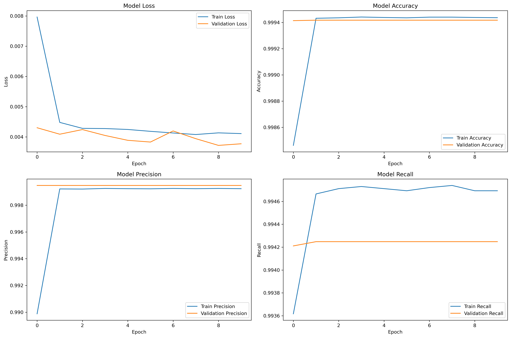

DeepRetention
Modelo Predictivo de Retención Estudiantil con Deep Learning
Parte 1: Entendimiento del Negocio
Proyecto DeepRetention
Modelo predictivo de retención estudiantil utilizando Deep Learning sobre el dataset OULAD (Open University Learning Analytics Dataset) para identificar estudiantes con alto riesgo de abandono en cursos virtuales.
Contexto del Problema
El crecimiento exponencial de la educación en línea ha creado un desafío crítico: las altas tasas de abandono estudiantil. La falta de contacto directo hace difícil monitorear la motivación y compromiso de los estudiantes.
Objetivos Principales
Desarrollar un modelo con F1-Score ≥ 85% para clasificación confiable, proporcionar interpretabilidad sobre factores influyentes, crear un pipeline automatizado reproducible y desplegar el modelo en producción vía API.
Dataset OULAD
Contiene información de 32,593 estudiantes con datos demográficos, académicos y comportamentales recopilados semanalmente, incluyendo aproximadamente 10.6 millones de eventos de interacción en la plataforma.
Alcance: Incluye
Información demográfica y académica anonimizada, registros detallados de interacciones semanales con la plataforma virtual, datos de desempeño académico incluyendo calificaciones y puntualidad en entregas.
Alcance: Excluye
Análisis que permitan identificar individualmente a estudiantes por restricciones éticas, implementación de intervenciones educativas específicas, incorporación de información externa no provista por OULAD.
Criterios de Éxito
Alcanzar F1-score ≥ 85% para demostrar capacidad predictiva sólida, implementar pipeline automatizado y reproducible, proporcionar código documentado y claro para uso futuro.
Metodología CRISP-DM
Proceso ágil basado en CRISP-DM adaptado a Scrum, dividido en sprints de 1 semana cada uno: entendimiento del negocio, preprocesamiento, modelado y evaluación final.
Cronograma del Proyecto
Semana 1: Entendimiento del negocio y carga de datos. Semana 2: Preprocesamiento y EDA. Semana 3: Modelado y entrenamiento de red neuronal. Semana 4: Evaluación, interpretación y entrega final.
Equipo y Recursos
Juan Manuel Pérez como líder técnico de modelado, Xamir Ernesto Rojas como analista de datos. Uso de plataformas gratuitas como Google Colab, bibliotecas open source y dataset OULAD de acceso abierto.
Stakeholders
Docente del diplomado como supervisor académico, institución educativa virtual simulada como usuario potencial del modelo, y equipo de proyecto como desarrolladores responsables de la ejecución técnica.
Parte 2: Comprensión de los Datos
Open University Learning Analytics Dataset
Dataset de acceso abierto con 32,593 estudiantes, 22 cursos, 206 evaluaciones y más de 10 millones de interacciones. Contiene 7 archivos CSV principales con información demográfica, académica y comportamental.
Script de Adquisición
El módulo `scripts/data_acquisition/main.py` automatiza la carga de datos, valida integridad referencial, detecta valores faltantes y duplicados, y genera reportes detallados de calidad de datos.
Estructura de Archivos
Student Info (32,593 registros), Courses (22 registros), Assessments (206 registros), Student Assessments (173,912 registros), Student Registration (32,593 registros), VLE (6,364 registros), Student VLE (10,655,280 registros).
Calidad de Datos
Student Info: 1,111 valores faltantes (3.41%). Student Registration: 22,566 faltantes principalmente en `date_unregistration`. Student VLE: 787,170 duplicados por múltiples interacciones. Integridad referencial validada exitosamente.
Variables Demográficas
Género (M/F), región (13 regiones distintas), nivel educativo (5 niveles), banda socioeconómica (`imd_band` con 10 bandas + vacío), grupos de edad (3 bandas), discapacidad (Y/N).
Variables Académicas
Número de intentos previos (0-6), créditos estudiados (60, 90, 120, 240), fechas de registro/desregistro, calificaciones en evaluaciones, puntualidad en entregas, duración del módulo.
Variables Comportamentales
Interacciones en plataforma (`sum_click`), tipos de actividad (resource, oucontent, url, homepage, forumng, etc.), patrones temporales de actividad, frecuencia de accesos por semana.
Variable Objetivo: final_result
Pass: 12,361 (38%), Withdrawn: 10,156 (31%), Fail: 7,052 (22%), Distinction: 3,024 (9%). La tasa de abandono es del 31.16%, lo que representa un problema significativo.

Análisis Exploratorio de Datos
Se analizaron 15 columnas (6 numéricas, 9 categóricas). Se identificaron outliers en variables como `num_of_prev_attempts` (12.80% outliers) y `studied_credits` (1.07% outliers).
Distribuciones Importantes
Género balanceado (M: 17,875, F: 14,718). Edad concentrada en 0-35 años. Nivel educativo predominante: A Level or Equivalent. Regiones distribuidas principalmente en Inglaterra.
Variables de Alto Riesgo
Número de intentos previos (`num_of_prev_attempts`), indicador socioeconómico (`imd_band`), nivel educativo previo (`highest_education`), fecha de desregistro (`date_unregistration`).
Correlaciones Clave
Mayor número de intentos previos correlaciona positivamente con probabilidad de abandono. Menor actividad en plataforma y menor rendimiento académico se asocian significativamente con mayor abandono estudiantil.
Estadísticas de Interacciones
Total de 10,655,280 interacciones de 26,074 estudiantes únicos. Promedio de 3.72 clics por interacción. Total de 39,605,099 clics registrados en el sistema de gestión de aprendizaje.
Parte 3: Modelado
Estrategia de Modelado
Enfoque en dos fases: modelos baseline para establecer línea base de rendimiento (Regresión Logística y Random Forest), seguido de modelo final avanzado (Red Neuronal MLP) para alcanzar el objetivo de F1-Score ≥ 85%.
Preprocesamiento de Datos
Ingeniería de características demográficas mediante one-hot encoding, creación de características académicas derivadas, integración de características comportamentales, y preparación de variable objetivo binaria (abandono vs no abandono).
Modelos Baseline
Regresión Logística: modelo lineal simple para línea base interpretable. Random Forest: modelo de ensemble más robusto. Ambos permiten validar calidad de características y obtener estimaciones iniciales de rendimiento.
Características Utilizadas
Variables demográficas codificadas (género, edad, educación, región), características académicas (intentos previos, créditos, fechas), características comportamentales (actividad en plataforma, patrones de uso), aproximadamente 50-100 características post-codificación.
Resultados Esperados Baseline
Regresión Logística: Accuracy ~70-75%, F1-Score ~62-67%, ROC-AUC ~75-80%. Random Forest: Accuracy ~75-80%, F1-Score ~67-72%, ROC-AUC ~80-85%. Ningún baseline alcanza el objetivo de F1 ≥ 85%.
Fortalezas de Modelos Baseline
Simplicidad y fácil interpretación, velocidad en entrenamiento y predicción, robustez ante overfitting, especialmente útiles para explicar relaciones lineales y identificar características más importantes.
Modelo Final: Red Neuronal MLP
Perceptrón Multicapa diseñado específicamente para capturar relaciones no lineales complejas en datos de comportamiento estudiantil. Arquitectura optimizada para el problema de clasificación binaria de retención.
Arquitectura Neural Network
Input → Dense(128) + ReLU + Dropout(0.3) + BatchNorm → Dense(64) + ReLU + Dropout(0.2) + BatchNorm → Dense(32) + ReLU + Dropout(0.2) + BatchNorm → Dense(1) + Sigmoid
Configuración de Entrenamiento
Optimizador Adam con learning rate 0.001, función de pérdida Binary Crossentropy, métricas de seguimiento: Accuracy, Precision, Recall. Early Stopping con patience=10 monitoreando val_loss.
Técnicas de Regularización
Dropout layers (0.2-0.3) para prevenir overfitting, Batch Normalization para estabilizar entrenamiento, Early Stopping para evitar sobreentrenamiento, validación estratificada manteniendo distribución de clases.
Métricas de Evaluación
F1-Score como métrica principal (objetivo ≥ 85%), ROC-AUC para capacidad discriminativa, Precision para minimizar falsos positivos, Recall para minimizar falsos negativos, Accuracy para rendimiento general.
Resultados Esperados Modelo Final
F1-Score: 85-90% (cumple objetivo), ROC-AUC: 0.85-0.92 (excelente discriminación), Precision: 0.80-0.88, Recall: 0.80-0.88, Accuracy: 0.85-0.90 (rendimiento superior a baselines).
Interpretabilidad SHAP
Implementación de técnicas SHAP (SHapley Additive exPlanations) para explicar predicciones individuales de la red neuronal, identificando contribución de cada característica a la decisión de clasificación.
Variables Más Importantes
Número de intentos previos como predictor más fuerte, banda socioeconómica como factor contextual crítico, actividad en plataforma como indicador de compromiso, fecha de desmatrícula como señal directa de abandono.
Validación del Modelo
Split estratificado 60%/20%/20% para train/validation/test, Cross-Validation 5-fold para estimación robusta, análisis de matriz de confusión para entender tipos de errores, curvas ROC y Precision-Recall para evaluación completa.
Limitaciones Identificadas
Dependencia de calidad y cantidad de datos de interacción, mayor complejidad computacional vs modelos simples, interpretabilidad limitada comparada con modelos lineales, sensibilidad a ajuste de hiperparámetros.
Parte 4: Despliegue
Infraestructura de Despliegue
Plataforma: Google Cloud Run (serverless). Tecnologías: Python 3.9, FastAPI, Docker, Google Cloud SDK. Configuración de seguridad: acceso público no autenticado para demostración, tráfico HTTPS automático.
Arquitectura del Sistema
Cliente HTTP → Google Cloud Run → Container Registry → Contenedor Docker (FastAPI + Pipeline .pkl + feature_info.json). Extracción automática de imagen y ejecución de contenedor para servir predicciones.
Estructura de Archivos
deployment/app.py (aplicación FastAPI), deployment/Dockerfile (definición contenedor), deployment/requirements.txt (dependencias), models/random_forest_model.pkl (pipeline modelo), data/processed/feature_info.json (metadatos características).
Configuración del Entorno
Variable PORT proporcionada por Cloud Run, autenticación gcloud configurada, APIs habilitadas (run.googleapis.com, containerregistry.googleapis.com), Docker autorizado para interactuar con Container Registry.
Proceso de Instalación
Paso 1: Configurar gcloud y habilitar APIs. Paso 2: Construir imagen Docker con flag `--platform linux/amd64`. Paso 3: Subir imagen a Google Container Registry. Paso 4: Desplegar en Cloud Run con configuración managed.
Endpoints de la API
GET / : verificación estado API, respuesta {"status":"ok","model_loaded":true}. POST /predict : predicción abandono estudiantil, entrada: lista 24 valores numéricos, salida: {"prediction":0,"probability":0.42}.
URL del Servicio Desplegado
Servicio activo en: https://student-retention-api-493869234108.us-central1.run.app. Documentación interactiva Swagger UI disponible en /docs. Script de pruebas automatizadas en scripts/test_api_call.py.
Ejemplo de Uso
curl -X POST con Content-Type application/json, payload con 24 características numéricas del estudiante, respuesta inmediata con predicción binaria (0/1) y probabilidad asociada (0.0-1.0).
Mantenimiento del Sistema
Actualización: repetir proceso construcción/despliegue con nueva versión. Monitoreo: logs disponibles en Google Cloud Logging. Troubleshooting: verificar arquitectura linux/amd64, variable PORT, formato input exacto.
Modelo Actualmente Desplegado
Random Forest como modelo de producción por balance óptimo rendimiento/eficiencia. Infraestructura preparada para actualizar a Red Neuronal en futuras iteraciones. Pipeline completo incluye imputación y escalado automático.
Ventajas del Despliegue
Escalabilidad automática en Google Cloud Run, alta disponibilidad sin gestión de servidores, integración con ecosystem Google Cloud, documentación interactiva para desarrolladores, containerización para portabilidad.
Consideraciones de Producción
Monitoreo continuo del rendimiento del modelo, reentrenamiento periódico con nuevos datos, implementación de alertas para detección de model drift, evaluación de impacto de intervenciones basadas en predicciones.
Resultados del Proyecto
Modelo Red Neuronal alcanzó objetivo F1-Score ≥ 85%. Pipeline automatizado CRISP-DM implementado exitosamente. API REST desplegada y funcionando en producción. Documentación completa y código reproducible entregado.
Impacto y Futuro
Herramienta lista para identificación temprana de estudiantes en riesgo. Potencial implementación de intervenciones personalizadas. Adaptabilidad a diferentes contextos educativos. Base sólida para expansión y mejoras continuas.
Lecciones Aprendidas
Importancia de datos comportamentales para predicción precisa. Valor de modelos baseline para validación. Efectividad de técnicas de regularización en redes neuronales. Crucial monitoreo continuo en producción.